Geislaskurður og Parametrísk hönnun
Verkefnalýsing
Markmið verkefnisins var að kynna sér og læra hvernig parametrísk hönnun virkar inni í fusion. Nota átti parametríska hönnun til að búa til geirnegldan (e. press fit) hlut með aðstoð geislaskera. framkvæma átti tilraunir og prufur til að sjá til þess að geislaskerinn skæri ekki of mikið efni í burtu. Markmiðið var að íhlutir ættu að passa þétt saman en þó helst þannig að hægt væri að setja þá saman handvirkt án aðstoðar tækjabúnaðar. Auk þess átti að nota výnilskerann til þess að útbúa einhverskonar límmiða.
Val á verkefni og hönnun
Eftir mikla hugsun og ráðfæringu við samnemendur sat ég enn hugmyndasnauður. Þá datt ég á spjall við Ólaf Inga Finsen samnemanda sem sagði mér frá sinni verkefnahugmynd sem var standur fyrir hin ýmsu trompet munnstykki sem hann á. Þá ákvað ég að gera svipað fyrir pabba minn en hann er saxófónleikari. Ég tók eftir að munnstykkin hans lágu á víð og dreif og hann hefði því mjög gott af því að eiga gyemslubox til að hafa þau öll á sama stað.
Hönnun fór fram í fusion þar sem ég byrjaði á að skilgreina mikilvægar stærðir eins og efnisþykkt, lengd og breidd á boxinu. Einnig langaði mig að nýta mér parametríska hönnun til að gera fjölda hólfa í boxinu breytilegan. Þá byrjaði ég að teikna en rakst fljótlega á erfiðleika með breytilegan fjölda hólfa. Upphaflega reyndi ég að nota "pattern" til að breyta fjölda festigata inni í "sketch" umhverfinu sem varð til þess að þegar ég hækkaði fjölda hólfanna varð til "sketch" fyrir gat en gatið sjálft kom ekki. Eftir smá tilraunastarfsemi komst ég að því að hægt er að nota "pattern" á göt og það leysti vandamálið. Aðrir þættir hönnunar voru nokkuð einfaldir og snerist verkefnið því mestmegnis um að velja góða parametra fyrir boxið. Fusion skjal má finna á Thingiverse. Loka hönnun má svo sjá á mynd hér að neðan
Geymsluboxið er samsett úr einni botnplötu með götum fyrir press-fit tennur, tveim misstórum plötum fyrir bak- og framhlið boxins og sex skilveggja sem skilja að hólfin. Munnstykkin voru mæld sem sirka 12x3 cm og því ákvað ég að hafa geymsluhólfin 12x5 cm. Parametrar sem voru notaðir eru á mynd hér að neðan.
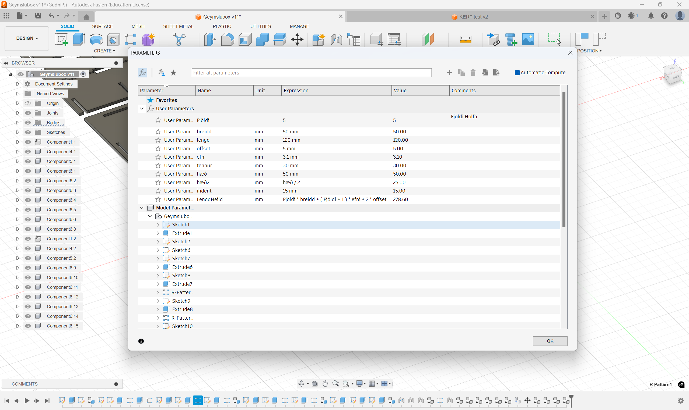Uppsetning á skurði inni í Fusion
Þegar módelið var tilbúið inni í fusion þurfti að huga að því hvernig ætti að skera partana út. Til að útbúa skurðarleiðina þarf fyrst að búa til verkfærið sem verið er að nota inni í Fusion. Þetta er gert í 'Manufacture' viðmótinu. Þar velur maður fyrst 'Tool library' og býr tli nýtt 'Tool'. þar velur maður allar viðeigandi stærðir miðað við skurðartólið sem á að notast við. Í þessu tilfelli var það 'laser cutting' með allar stillingar óbreyttar nema KERF width en til þess að ákvarða það þurfti að framkvæma KERF próf. Þegar búið var að útbúa verkfærið bjó ég til afrit af öllum pörtunum sem átti að skera og lagði þá flata í eitt plan. Til þess að búa til skurðarprófil valdi ég svo '2D profile' undir 'cutting' í valmynd og valdi öll yfirborðin sem ég vildi skera út ásamt því að velja verkfærið sem var búið til. Aðrar stillingar voru óbreyttar. Til að fá svo loks myndina af því sem átti að skera var svo farið í 'Post Process' undir 'Actions'. Þar þurfti að breyta tveim stillingum ásamt því að velja nafn og file týpu. Þar þurfti að af-velja 'Include drill' og velja svo 'Only cutting'. Svo átti að exporta sem .dxf skjali. Uppsetningu og stillingar má sjá á myndum hér að neðan.
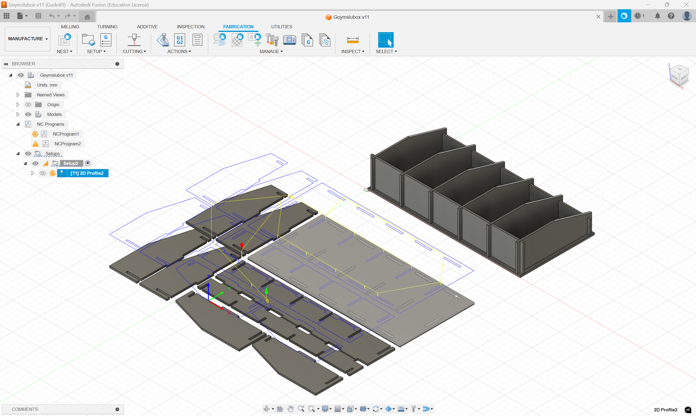 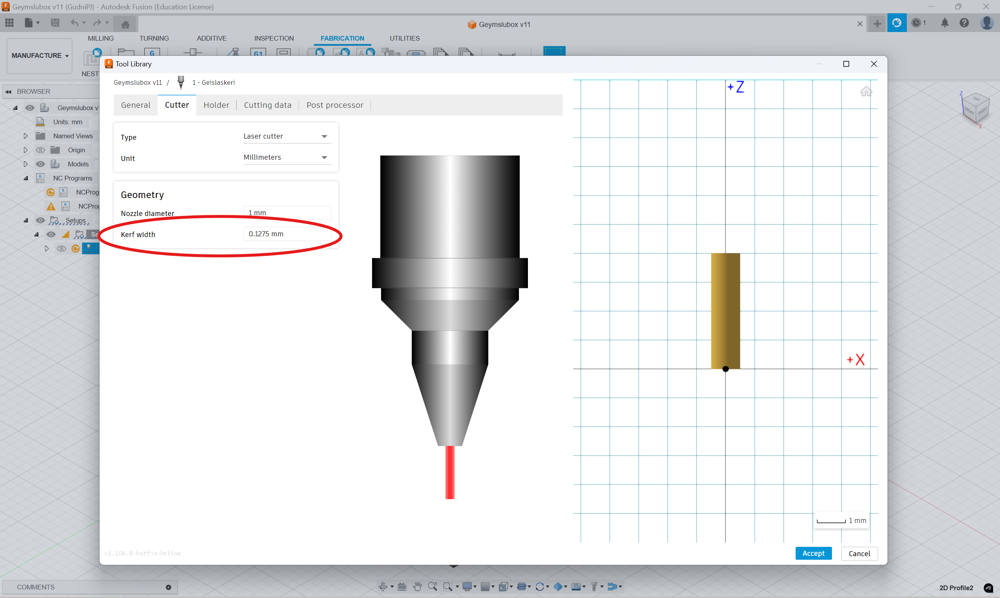 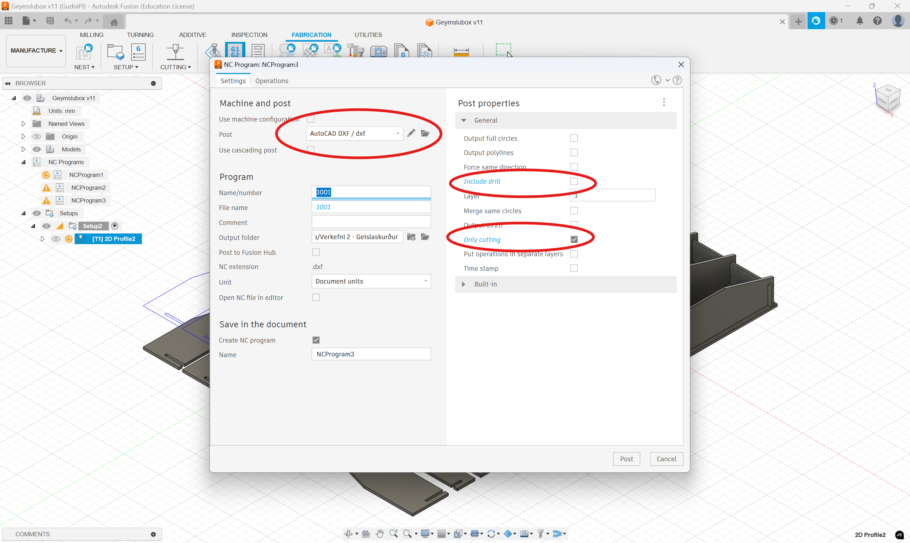KERF próf
KERF er í stuttu máli bara hversu mikið aukaefni skerinn tekur af hlutnum, sem sagt í þessu tilfelli hefur geislinn einhvert þvermál og brennir aðeins efnið í kringum hann þannig að hann tekur alltaf aðeins meira efni af en maður myndi vilja. Til að fá réttan skurðarprófíl þarf því að vita hversu mikið auka efni skerinn brennir og láta hann skera út fyrir upprunalegu línuna þannig að lokaformið verði rétt. Til að finna þetta KERF þvermál var útbúið próf þar sem skerinn var látinn skera út 11 10x10mm ferninga og svo mældi ég hversu stórt gatið sem var skorið út var og hversu stórir kassarnir voru saman. Til að finna þvermálið var svo notast við eftirfarandi formúlu
KERF = (Lengd skurðar - Lengd ferninga)/(Fjöldi skurða)
Heildarlengd var mæld sem 110,25mm og ferningarnir sem 108,72mm. Fjöldi skurða var 12 þar sem það voru 11 ferningar. Út frá þessu fékst KERF þvermál sem 0,1275mm. Þessi hluti verkefnisins var unnin með Óðni Andrasyni.
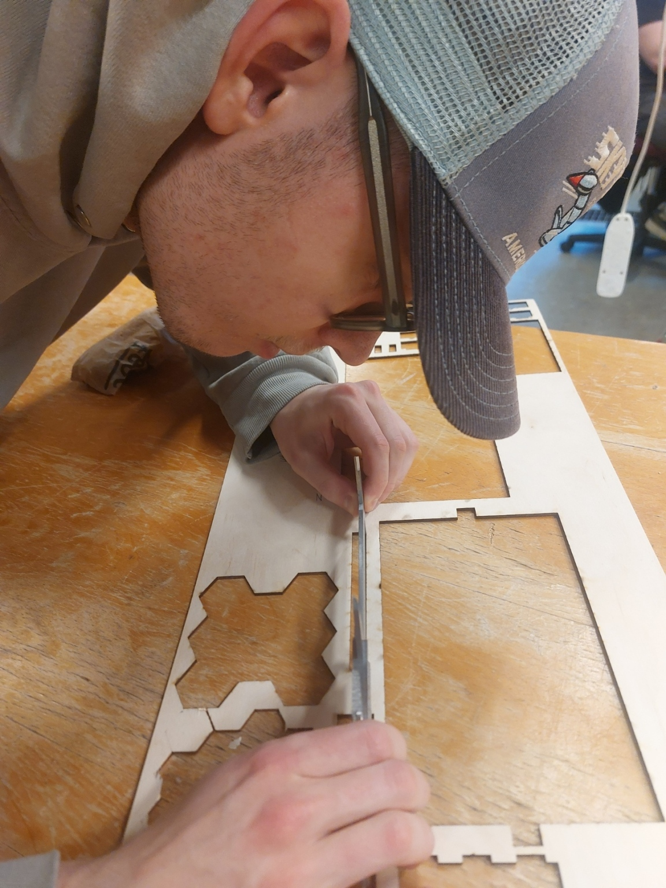 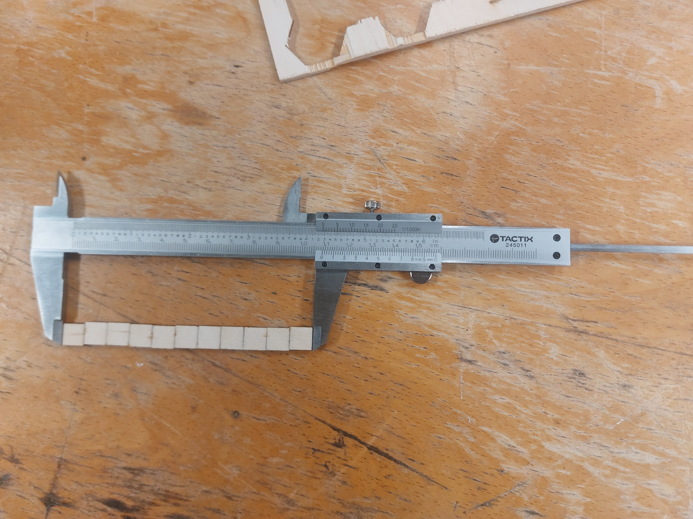Til að athuga hvort KERF mælingarnar hefðu verið gerðar nógu vel var skorinn út mjög einfaldur press-fit hlutur til að athuga hversu þétt hlutarnir myndu passa saman. Þetta próf gekk mjög vel og hlutarnir pössuðu vel saman.
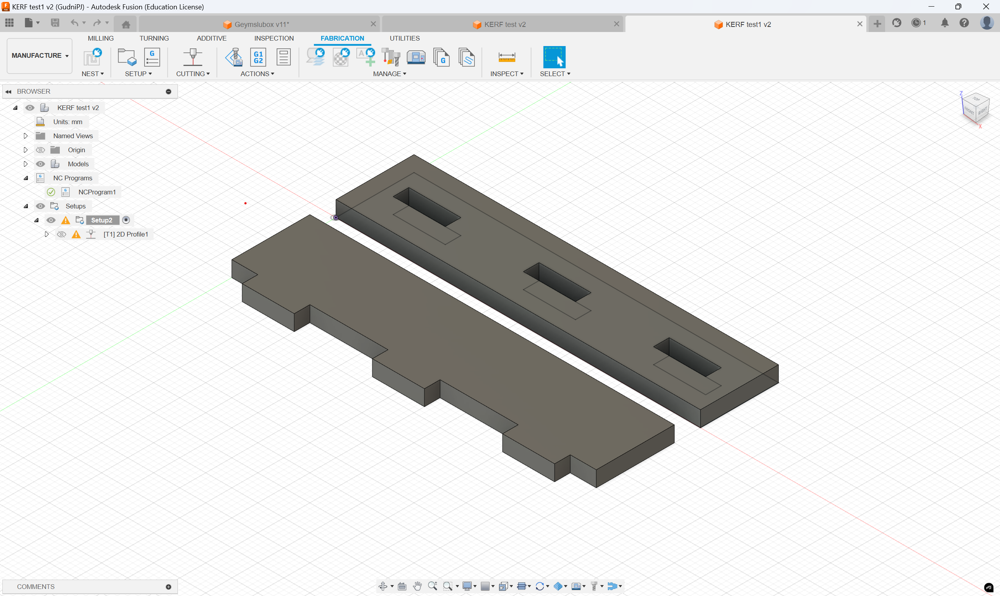 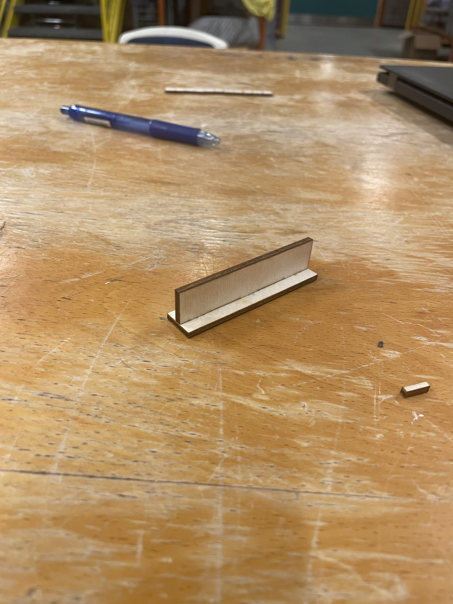Skurður og loka samsetning
Þegar kom að lokaskurði þurfti ekki að gera mikið. Ég byrjaði á að velja mér plötu og fann eina krossviðarplötu sem var ekki alveg jafn verpt og hinar. Þegar ég mældi þykktina á henni komst ég að því að hún var í raun 3,1mm frekar en akkúrat 3mm og því þurfti ég aðeins að breyta parametrunum í fusion og setti efnisþykktina upp í 3,1mm. Skurðurinn sjálfur tók um 8 mínútur þar sem geislaskerinn þurfti að vinna á 10% hraða til að sjá til þess að hann skæri alveg í gegnum plötuna. Boxið passaði mjög þæginlega saman og þurfti minniháttar afl til að ýta plötunum saman. Skurðinn ásamt samsettu boxi má sjá á myndum hér að neðan.
 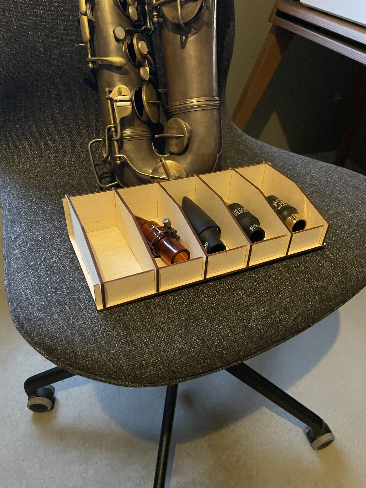
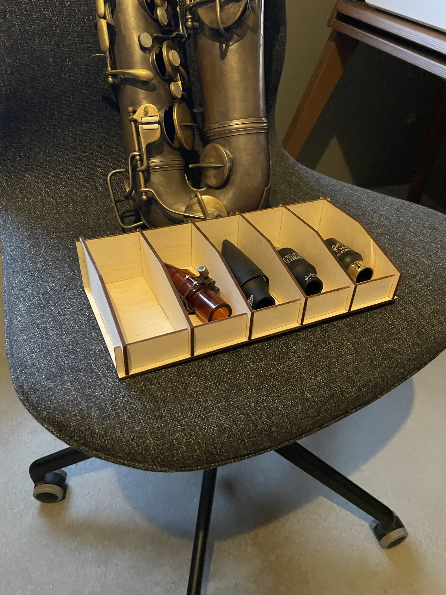
Výnilskurður
Výnilskurðurinn var öllu einfaldari þar sem ekki þurfti að huga að hlutum eins og KERF eða hönnun í Fusion. Ég náði í merki af netinu til að skera út. Merki Knattspyrnufélags Vesturbæjar (KV) varð fyrir valinu þar sem ég spila körfubolta með liðinu. Merkið tók ég héðan og færði inn í inkscape til að undirbúa skjal til að skera út. Ég náði í pdf úr inkscape og skar út með výnilskeranum sem tók ekki nema svona 20 sekúndur. Límmiðann tók ég svo og festi á tölvuna mína.
{kind=link}
 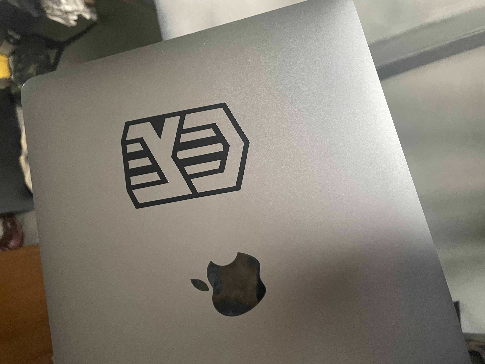
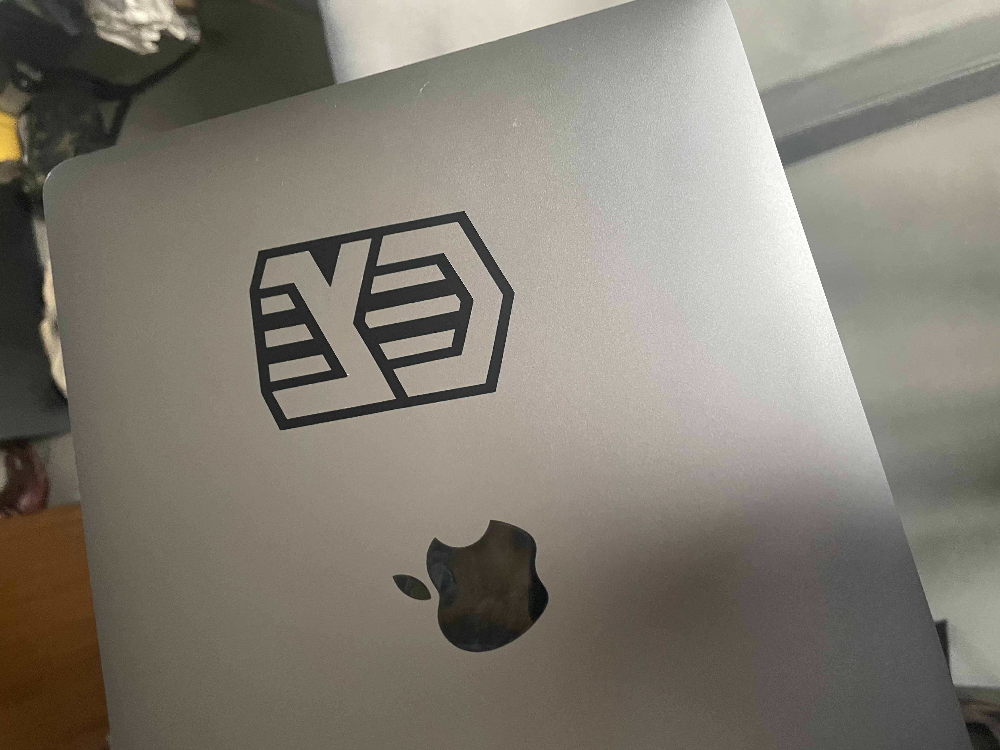